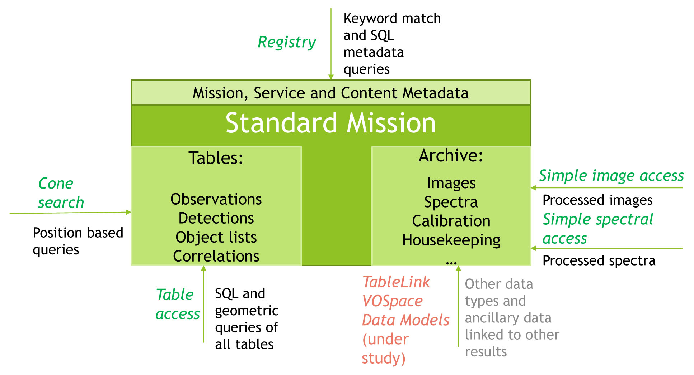

+ Go to a comprehensive listing of resources by mission.
The page summarizes the Virtual Observatory (VO) capabilities of NASA astronomical archives. You can also see a comprehensive listing on the resources page. The Virtual Observatory is a set of data services that have adopted standards to facilitate the dissemination of astronomical data, using rules agreed upon by the International Virtual Observatory Alliance (IVOA). Data can now be acquired using protocols which allow users to retrieve data in VOTable formatted xml files. This system provides an alternative to data extraction via conventional astronomical catalog interfaces.
The NAVO collaboration has developed framework to use VO interfaces to provide comprehensive and consistent access to NASA data. This interface concept is described in our presentation to the 2016 SPIE while the specific implementations are noted in this page and the linked mission table.
|  This figure illustrates the the standard model the NAVO team has defined for publishing a mission in the virtual observatory. |
+ Go to a comprehensive listing of resources by mission.
A general summary of NAVO is presented in our ADASS poster from October 2015. The annual report on the state of NAVO archives was released on February 2015 and our initial plan for implementation of a common interface was given in June 2015.